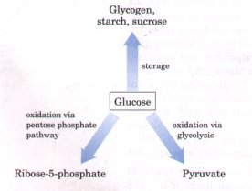
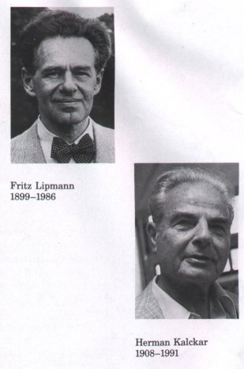
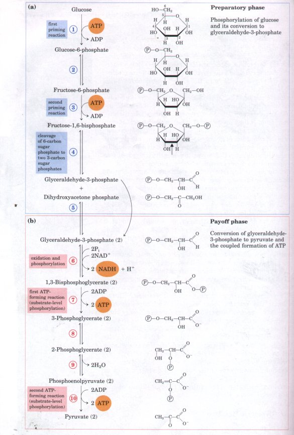
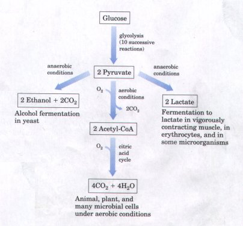

| Having examined the organizing
principles of cell metabolism and bioenergetics, we are
ready to see how the chemical energy stored in glucose
and other fuel molecules is released to perform
biological work. D-Glucose is the major fuel of most
organisms and occupies a central position in metabolism.
It is relatively rich in potential energy; its complete
oxidation to carbon dioxide and water proceeds with a
standard free-energy change of -2,840 kJ/mol. By storing
glucose as a high molecular weight polymer, a cell can
stockpile large quantities of hexose units while
maintaining a relatively low cytosolic osmolarity. When
the cell's energy demands suddenly increase, glucose can
be released quickly from these intracellular storage
polymers. Glucose is not only an excellent fuel, it is also a remarkably versatile precursor, capable of supplying a huge array of metabolic intermediates, the necessary starting materials for biosynthetic reactions. E. coli can obtain from glucose the carbon skeletons for every one of the amino acids, nucleotides, coenzymes, fatty acids, and other metabolic intermediates needed for growth. A study of the numerous metabolic fates of glucose would encompass hundreds or thousands of transformations. In the higher plants and animals glucose has three major fates: it may be stored (as a polysaccharide or as sucrose), oxidized to a three-carbon compound (pyruvate) via glycolysis, or oxidized to pentoses via the pentose phosphate (phosphogluconate) pathway (Fig. 14-1). This chapter begins with a description of the individual reactions that constitute the glycolytic pathway and of the enzymes that catalyze them. We then consider fermentation, the operation of the glycolytic pathway under anaerobic conditions. The sources of glucose units for glycolysis are diverse, and we next describe pathways that bring carbon into glycolysis from hexoses other than glucose and from disaccharides and polysaccharides. Like all metabolic pathways, glycolysis is under tight regulation. We discuss the general principles of metabolic regulation, then illustrate these principles with the glycolytic pathway. The chapter concludes with a brief description of two other catabolic pathways that begin with glucose: one leading to pentoses, the other to glucuronate and ascorbic acid (vitamin C). |
 Figure 14-1 Major pathways of glucose utilization in cells of higher plants and animals. Although not the only possible fates for glucose, these three pathways are the most significant in terms of the amount of glucose that flows through them in most cells. |
| In glycolysis (from the Greek glykys,
meaning "sweet," and lysis, meaning
"splitting") a molecule of glucose is degraded
in a series of enzyme-catalyzed reactions to yield two
molecules of pyruvate. During the sequential reactions of
glycolysis some of the free energy released from glucose
is conserved in the form of ATP. Glycolysis was the first
metabolic pathway to be elucidated and is probably the
best understood. From the discovery by Eduard Buchner (in
1897) of fermentation in broken extracts of yeast cells
until the clear recognition by Fritz Lipmann and Herman
Kalckar (in 1941) of the metabolic role of highenergy
compounds such as ATP in metabolism, the reactions of
glycolysis in extracts of yeast and muscle were central
to biochemical research. The development of methods of
enzyme purification, the discovery and recognition of the
importance of cofactors such as NAD, and the discovery of
the pivotal role in metabolism of phosphorylated
compounds all came out of studies of glycolysis. By now,
all of the enzymes of glycolysis have been purified from
many organisms and thoroughly studied, and the
three-dimensional structures of all of the glycolytic
enzymes are known from x-ray crystallographic studies. Glycolysis is an almost universal central pathway of glucose catabolism. It is the pathway through which the largest flux of carbon occurs in most cells. In certain mammalian tissues and cell types (erythrocytes, renal medulla, brain, and sperm, for example), glucose is the sole or major source of metabolic energy through glycolysis. Some plant tissues that are modified for the storage of starch (such as potato tubers) and some plants adapted to growth in areas regularly inundated by water (watercress, for example) derive most of their energy from glycolysis; many types of anaerobic microorganisms are entirely dependent on glycolysis. Fermentation is a general term denoting the anaerobic degradation of glucose or other organic nutrients into various products (characteristic for difl'erent organisms) to obtain energy in the form of ATP. Because living organisms first arose in an atmosphere lacking oxygen, anaerobic breakdown of glucose is probably the most ancient biological mechanism for obtaining energy from organic fuel molecules. In the course of evolution this reaction sequence has been completely conserved; the glycolytic enzymes of vertebrate animals are closely similar, in amino acid sequence and three-dimensional structure, to their homologs in yeast and spinach. The process of glycolysis differs from one species to another only in the details of its regulation and in the subsequent metabolic fate of the pyruvate formed. The thermodynamic principles and the types of regulatory mechanisms in glycolysis are found in all pathways of cell metabolism. A study of glycolysis can serve as a model of many aspects of the pathways discussed later in this book. Before examining each step of the pathway in some detail, we will take a look at glycolysis as a whole. |
 |
The breakdown of the six-carbon glucose into two molecules of the three-carbon pyruvate occurs in ten steps, the first five of which constitute the preparatory phase (Fig. 14-2a). In these reactions glucose is first phosphorylated at the hydroxyl group on C-6 (step 1). The nglucose-6-phosphate thus formed is converted to D-fructose-6phosphate (step 2), which is again phosphorylated, this time at C-1, to yield n-fructose-1,6-bisphosphate (step 3 ). For both phosphorylations, ATP is the phosphate donor. As all of the sugar derivatives that occur in the glycolytic pathway are the D isomers, we will omit the D designation except when emphasizing stereochemistry.

Figure 14-2 The two phases of glycolysis. For each molecule of glucose that passes through the preparatory phase (a), two molecules of glyceraldehyde-3-phosphate are formed; both pass through the payoff phase (b). Pyruvate is the end product of the second phase under aerobic conditions, but under anaerobic conditions pyruvate is reduced to lactate to regenerate NAD+. For each glucose molecule, two ATP are consumed in the preparatory phase and four ATP are produced in the payoff phase, giving a net yield of two molecules of ATP per one of glucose converted to pyruvate. The number beside each reaction step corresponds to its numbered heading in the text discussion. Keep in mind that each phosphate group, represented here as (P) has two negative charges (-PO32-).
Fructose-1,6-bisphosphate is next split to yield two three-carbon molecules, dihydroxyacetone phosphate and glyceraldehyde-3-phosphate (step 4); this is the "lysis" step that gives the process its name. The dihydroxyacetone phosphate is isomerized to a second molecule of glyceraldehyde-3-phosphate (step 5); this ends the first phase of glycolysis. Note that two molecules of ATP must be invested to activate, or prime, the glucose molecule for its cleavage into two three-carbon pieces; later there will be a good return on this investment. To sum up: in the preparatory phase of glycolysis the energy of ATP is invested, raising the free-energy content of the intermediates, and the carbon chains of all the metabolized hexoses are converted into a common product, glyceraldehyde-3-phosphate.
The energetic gain comes in the payoff phase of glycolysis (Fig. 14-2b). Each molecule of glyceraldehyde-3-phosphate is oxidized and phosphorylated by inorganic phosphate (not by ATP) to form 1,3bisphosphoglycerate (step 6)?. Energy is released as the two molecules of 1,3-bisphosphoglycerate are converted into two molecules of pyruvate (steps 7 through 10)?. Much of this energy is conserved by the coupled phosphorylation of four molecules of ADP to ATP. The net yield is two molecules of ATP per molecule of glucose used, because two molecules of ATP were invested in the preparatory phase of glycolysis. Energy is also conserved in the payoff phase in the formation of two molecules of NADH per molecule of glucose.
In the sequential reactions of glycolysis, three types of chemical transformation are particularly noteworthy: (1) the degradation of the carbon skeleton of glucose to yield pyruvate, (2) the phosphorylation of ADP to ATP by high-energy phosphate compounds formed during glycolysis, and (3) the transfer of hydrogen atoms or electrons to NAD+, forming NADH. The fate of the product, pyruvate, depends on the cell type and the metabolic circumstances.
| Fate of Pyruvate
Three alternative catabolic routes are taken by the
pyruvate formed by glycolysis. In aerobic organisms or
tissues, under aerobic conditions, glycolysis constitutes
only the first stage in the complete degradation of
glucose (Fig. 14-3). Pyruvate is oxidized, with loss of
its carboxyl group as CO2, to yield the acetyl group of
acetylcoenzyme A, which is then oxidized completely to
CO2 by the citric acid cycle (Chapter 15). The electrons
from these oxidations are passed to O2 through a chain of
carriers in the mitochondrion, forming H2O. The energy
from the electron transfer reactions drives the synthesis
of ATP in the mitochondrion (Chapter 18). The second route for pyruvate metabolism is its reduction to lactate via lactic acid fermentation. When a tissue such as vigorously contracting skeletal muscle must function anaerobically, the pyruvate cannot be oxidized further for lack of oxygen. Under these conditions pyruvate is reduced to lactate. Certain tissues and cell types (retina, brain, erythrocytes) convert glucose to lactate even under aerobic conditions. Lactate (the dissociated form of lactic acid) is also the product of glycolysis under anaerobic conditions in microorganisms that carry out the lactic acid fermentation (Fig. 14-3). |
 Figure 14-3 Three possible catabolic fates of the pyruvate formed in the payoff phase of glycolysis. Pyruvate also serves as a precursor in many anabolic reactions, not shown here. |
The third major route for catabolism of pyruvate leads to ethanol. In some plant tissues and in certain invertebrates, protists, and microorganisms such as brewer's yeast, pyruvate is converted anaerobically into ethanol and CO2, a process called alcohol (or ethanol) fermentation (Fig. 14-3).
The focus of this chapter is catabolism, but pyruvate has other, anabolic, fates. It can, for example, provide the carbon skeleton for the synthesis of the amino acid alanine. We shall return to these anabolic reactions of pyruvate in later chapters.
ATP Formation Coupled to Glycolysis During glycolysis some of the energy of the glucose molecule is conserved in the form of ATP, while much remains in the product, pyruvate. The overall equation for glycolysis is
Glucose + 2NAD+ + 2ADP + 2Pi  2 pyruvate + 2NADH + 2H+ + 2ATP + 2H2O (14-1)
2 pyruvate + 2NADH + 2H+ + 2ATP + 2H2O (14-1)
For each molecule of glucose degraded to pyruvate, two molecules of ATP are generated from ADP and Pi. We can now resolve the equation of glycolysis into two processes: (1) the conversion of glucose into pyruvate, which is exergonic:
Glucose + 2NAD+  2 pyruvate + 2NADH + 2H+
(14-2) ,ΔG°'1 = -146 kJ/mol
2 pyruvate + 2NADH + 2H+
(14-2) ,ΔG°'1 = -146 kJ/mol
and (2) the formation of ATP from ADP and Pi, which is endergonic:
2ADP + 2Pi 2ATP + 2H2O (14-3) ,ΔG°'2 = 2(30.5
kJ/mol) = 61 kJ/mol
If we now write the sum of Equations 14-2 and 14-3, we can also determine the overall standard free-energy change of glycolysis (Eqn 14-1), including ATP formation, as the algebraic sum, ΔG°'S, of ΔG°'l and ΔG°'2
ΔG°'s = ΔG°'1' + ΔG°'2 = -146 kJ/mol + 61 kJ/mol = -85 kJ/mol
Under either standard or intracellular conditions, glycolysis is an essentially irreversible process, driven to completion by this large net decrease in free energy. At the actual intracellular concentrations of ATP, ADP, and Pi (see Table 13-5) and of glucose and pyruvate, the efficiency of recovery of the energy of glycolysis in the form of ATP is over 60%.
Energy Remaining in the Pyruuate Produced by Glycolysis Glycolysis releases only a small fraction of the total available energy of the glucose molecule. When glucose is oxidized completely to CO2 and H2O, the total standard free-energy change is -2,840 kJ/mol. The glycolytic degradation of glucose to two molecules of pyruvate (ΔG°'= -146 kJ/mol) therefore yields only (146/2,840)100 = 5.2% of the total energy that can be released by complete oxidation. The two molecules of pyruvate formed by glycolysis still contain most of the biologically available energy of the glucose molecule, energy that can be extracted by oxidative reactions in the citric acid cycle.
Importance of Phosphorylated Intermediates Each of the nine glycolytic intermediates between glucose and pyruvate is phosphorylated (Fig. 14-2). The phosphate groups appear to have three functions.
1. The phosphate groups are ionized at pH 7, thus giving each of the intermediates of glycolysis a net negative charge. Because the plasma membrane is impermeable to molecules that are charged, the phosphorylated intermediates cannot diffuse out of the cell. After the initial phosphorylation, the cell does not have to spend further energy in retaining phosphorylated intermediates despite the large difference between the intracellular and extracellular concentrations of these compounds.
2. Phosphate groups are essential components in the enzymatic conservation of metabolic energy. Energy released in the breakage of phosphoric acid anhydride bonds (such as those in ATP) is partially conserved in the formation of phosphate esters such as glucose-6phosphate. High-energy phosphate compounds formed in glycolysis (1,3-bisphosphoglycerate and phosphoenol pyruvate) donate phosphate groups to ADP to form ATP.
3. Binding of phosphate groups to the active sites of enzymes provides binding energy that contributes to lowering the activation energy and increasing the specificity of enzyme-catalyzed reactions (Chapter 8). The phosphate groups of ADP, ATP, and the glycolytic intermediates form complexes with Mg2+, and the substrate binding sites of many of the glycolytic enzymes are specific for these Mg2+ complexes. Nearly all the glycolytic enzymes require Mg2+ for activity.